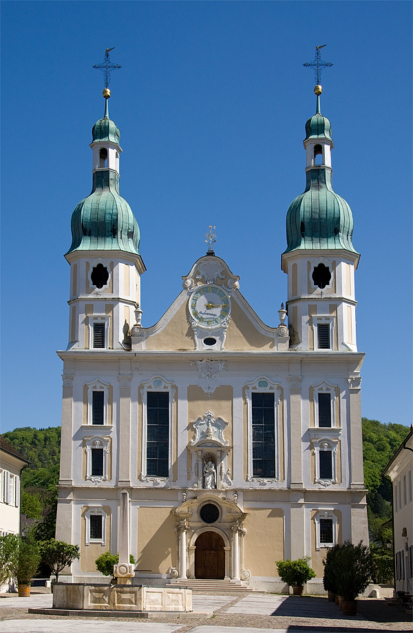
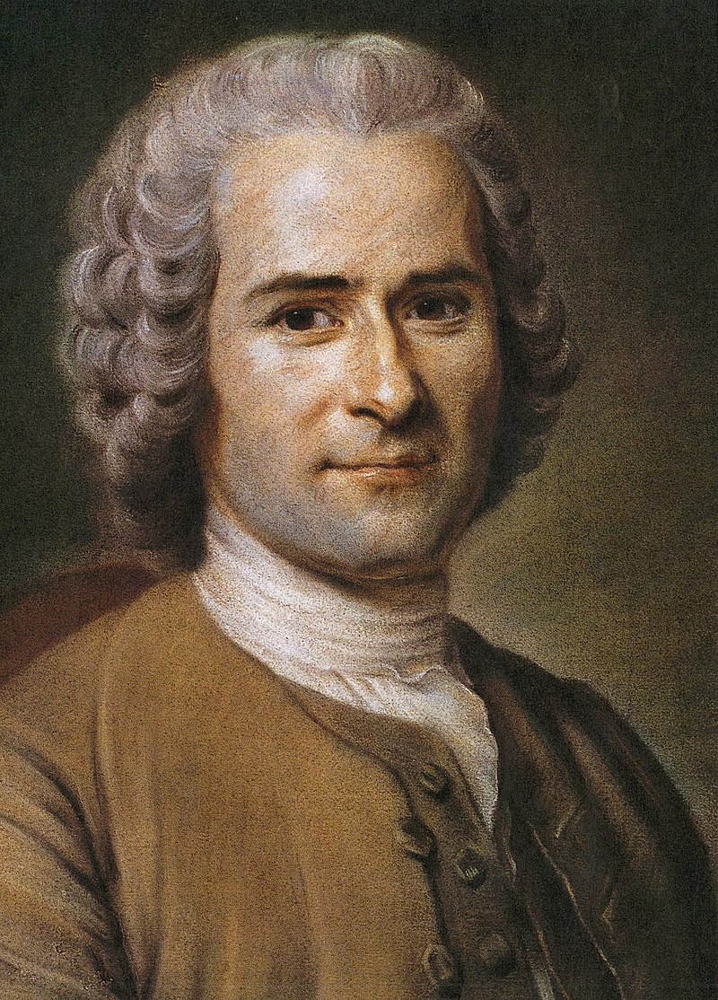
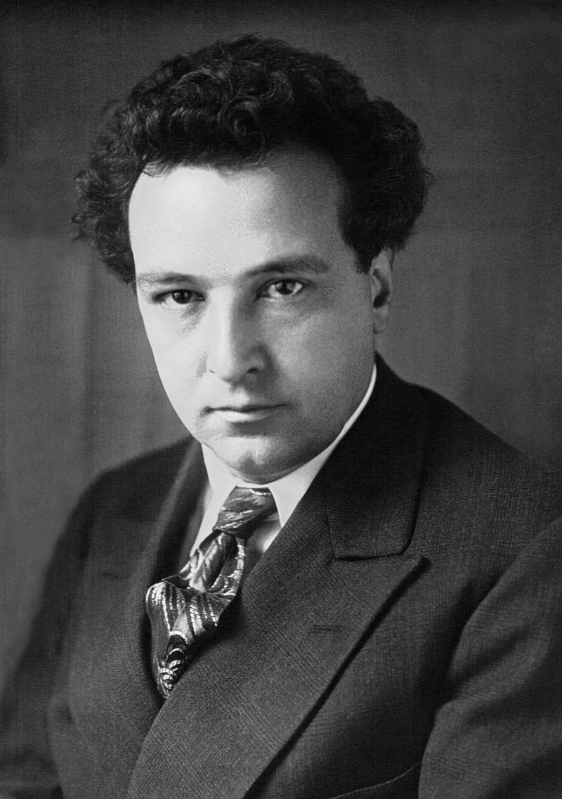
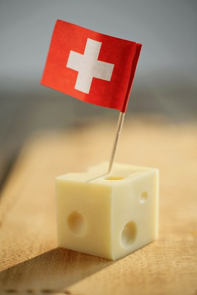
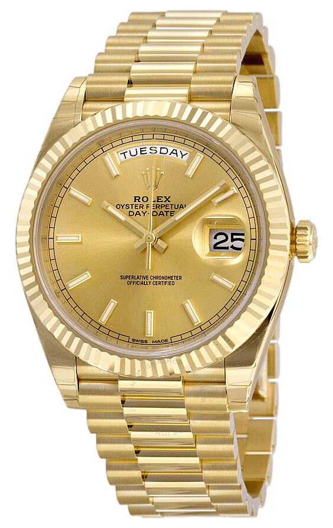

Contenuti:
Grazie alla sua neutralità, la Svizzera conserva ancora tutti gli stili architettonici che si sono susseguiti nella storia
del paese. I principali stili sono l'architettura romanica, tra cui le cattedrali di Basilea e Ginevra, e quella gotica, come
la cattedrale di Zurigo. Numerosi architetti svizzeri operarono fuori dal paese, come il ticinese Francesco Borromini, dove diresse la costruzione
della chiesa di San Carlo alle Quattro Fontane a Roma. |
 |
La letteratura Svizzera nacque inizialmente in tedesco, per poi essere scritta in francese a partire dal 1700. Tra i classici della letteratura troviamo Jeremias Gotthelf
e Gottfried Keller. I principali sono però Max Frisch, conosciuto per la sua opera "Volevamo braccia, arrivarono persone", e Friedrich Dürrenmatt, conosciuto per opere
come Die Physiker (il fisico) e Das Versprechen (la promessa). Esponenti della letteratura in francese furono Jean-Jacques Rousseau e Madame de Staël. |
 |
La musica popolare svizzera si sviluppò intorno al 1300 con la Minnesang, un tipo di componimento lirico in alto tedesco con argomento amoroso. Verso la fine del 1700 nacque a Lucerna l'Helvetische Konkordiagesellschaft, o società Concordia Elvetica, che promosse la musica profana nell'ambito borghese. Nello stesso periodo nacque lo yodel e la musica con il corno alpino. Nel 1808 gli ambienti liberali promossero la Società svizzera di musica, che si occupò di organizzare festival musicali. Oggi i principali appuntamenti musicali sono: le annuali rassegne di musica classica di Lucerna (dal 1938), di Zurigo e di Ascona, il Montreux Jazz Festival, l'Estival Jazz di Lugano, l'Open Air di San Gallo, il Paléo Festival Nyon e la Street Parade zurighese. Tra i cantautori svizzeri moderni più importanti abbiamo il luaganese Paolo Meneguzzi e Lys Assia, che con il singolo Refrain vinse la prima edizione dell'Eurovision del 1956. |
 |
La cucina svizzera è caratterizzata da un'ampia varietà legata ai cantoni, dovuta grazie al pluriculturalità del territorio elvetico. |
 |
L'industria orologieria svizzera è uno dei fiori all'occhiello del paese. Con più di 700 industrie in tutto il territorio, il settore degli orologi è il terzo export più grande della confederazione.
La passione svizzera per gli orologi nacque intorno al 1600 a Ginevra, quando il riformatore Giovanni Calvino (Jean Calvin) vietò di indossare i gioelli. Da quel momento gli orafi della città si dedicarono
alla produzione di orologi. Nel ventesimo secolo l'industria si sviluppò fino a diventare la migliore al mondo. Il primo orologio da polso venne inventato nel 1926, e in seguito vennero introdotte innovazioni
come il primo orologio con tecnologia a quarzo e il primo orologio impermeabile. |
 |